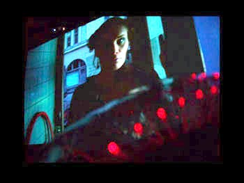

|
 Obsession is an attempt to describe, how the traumatic acts of violence not only affect the individual, but how her family and life-environment are also violated. The narrative level of Obsession discusses subject matter of "sex and violence" in our representational culture. Inside the four walls of a self-service launderette, young Emmi and an entrant stranger, Henrik, measure embodied distance. From their interaction, a loaded emotional situation emerges. The computational core of Obsession is a narrative engine, based on content metadata. Inspired by the Russian film theorist Sergei Eisenstein, the”montage-machine” of Obsession maps spectators’ psycho-physiological states to cinematic elements.
OBSESSION - ENACTIVE CINEMA INSTALLATION BUILDS A DYNAMIC EMOTION ECOLOGY The project Obsession introduces a novel kind of interactive cinema genre, which is described as enactive cinema: How the narrative unfolds, and how rhythm and soundscape emerge, depend on how the spectator experiences the emotional dynamics between the characters. Enactive cinema emphasizes unconscious interaction between the cinema spectator and the cinema. Instead of the spectator directly manipulating the narrative, its unfolding is affected by the spectator's emotional participation. Particular attention has paid on the cinematic quality. Obsession’s high quality cinematic material is shot on film, and the soundscape is carefully elaborated to support almost infinite range of emotional atmospheres on large-scale cinema screens. The narrative framework of Obsession makes an attempt to describe, how traumatic acts of violence not only affect the individual, but the family becomes violated too. The young woman Emmi works in a self-service launderette, managed by her mother Jatta. Jatta is about to give birth very soon and is obviously happy. Nothing in her behavior reveals that the pregnancy started in "daterape". She has wiped past events into oblivion. Instead, the daughter Emmi is going through the grieving and healing process on behalf of her mother. When a strange man comes in to do his laundry, Emmi's "processing" jumps on fast tracks - in Emmi's own obsessive manner. The cinematic thinking of Russian film director Sergei Eisenstein, dating from the first half of the 20th century, inspired the creation of installation. What is called dynamic emotion ecology refers to the interactive dialogue between the spectator and the fully authored artwork. A landscape of potential narrative worlds emerges from interpreting and anticipating experiences of the characters. Obsession is designed to support the maximal artistic authorship, following the first of filmmaker Eisenstein’s principles. It is the author’s responsibility to prepare a cinematic environment, which best protects the spectator’s emotional construction of cinematic experience. The Eisensteinian ”montage-machine” is based on a narrative logic that matches cinematic content with spectators’ psycho-physiological states. Thus the spectator’s emotional experiences have effects on the narrative, constituting an ecological circuit of continuous interaction with the spectator and the narrative space. The spectator’s emotional experience is connected to the installation’s real-time emotional montage-dynamics even without conscious attention on interaction. The invitation to enact is very gentle. Emphasizing the spectator's situated involvement, the narrative unfolds on four interrelated screen-walls creating a panorama of 360°. In the middle of the installation space five chairs invite to sit down. While following Emmi's and Henrik's story, each spectator's heart rate, breathing and movements are continuously measured by the built-in bio-sensors. The spectator decides which one of the four screens to look at. The orientation is tracked with a sensor hidden in the rotating chair. The screen attended takes lead on the narrative, becoming a dominating screen, while the three other screens refer to the narrative direction taken on the dominating screen. In the real Eisensteinian spirit, instead of two tracks, here the unfolding cinema scene involves three: moving image, sound and emotion tracks. The emotional dynamics is given its own cinematic role. The seven continuously turning wheels under each of the screen images display the synchronized emotion data pre-recorded in a lab. This is put in interaction with the spectator’s real-time emotional indicators. Obsession suggests that unconscious and conscious experience interact in an inseparable and complex manner. The cinema experience is more than seeing and hearing. It is about sensing and re-living of one’s own experience in what happens to the “others” – ENACTIVE CINEMA. Links http://www.enactivecinema.net/
http://crucible.uiah.fi/obsession |